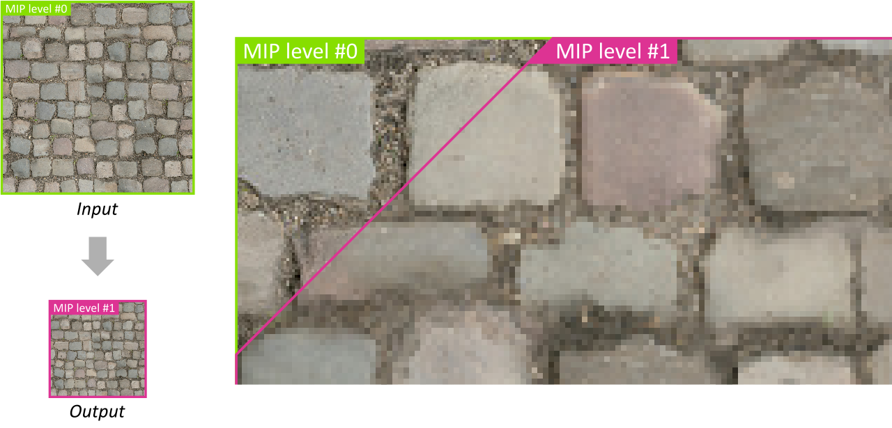
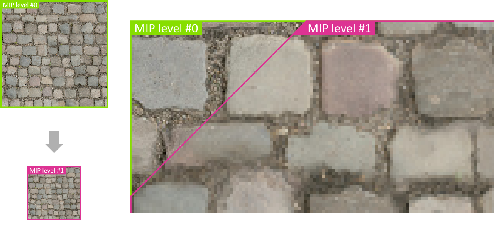
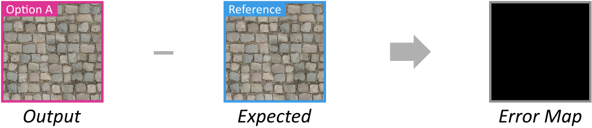
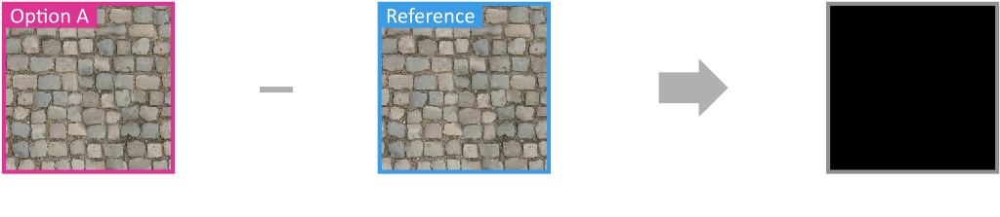

Mipmap Generation#
Resulting code: step211
A first application that I suggest for our newly learnt compute shaders is the generation of mipmaps. In the chapter about Texture Sampling we saw that before applying a texture on a 3D mesh, we pre-compute different downsampled versions of it.
 Comparison of the output MIP level #1 and the input MIP level #0. Each texel of #1 is the average of 4 texels in #0.
At the time, we were building the pyramid on the CPU, prior to uploading the texture data to the GPU texture object. But this problem is actually a very good fit for compute shaders!
A very parallel problem#
The problem of MIP level generation boils down to the following: given a MIP level \(n - 1\), we compute a texel \((i,j)\) of the MIP level \(n\) by averaging the for texels from MIP level \(n - 1\) with coordinates \((2 i + u,2j + v)\), where \(u\) and \(v\) span in \(\{0,1\}\).
A good property of this problem is that processing is very local: a given texel of MIP level \(n\) only depend on a small fixed number of texels from the previous level \(n - 1\), and only contributes to one texel of next level \(n + 1\).
There might seem to be two ways of treating this problem as a dispatch of parallel jobs:
Option A One thread per pixel of level \(n\), each texel \((i,j)\) of this level fetches 4 texels from the MIP level \(n - 1\) and averages them.
Option B One thread per pixel of level \(n - 1\), each texel \((i',j')\) of this level is divided by \(4\) (total number of averaged texels) and accumulated in the texel \((i'/2, j'/2)\) of the MIP level \(n\).
Option A has 4 times less threads, but each thread does 4 texture reads instead of 1 for Option B. Both options do 1 write per thread.
Note
The limiting factor in the case of such a simple mathematical operation is memory access, we do not really care about the computation of the average itself.
Spoiler alert: Option A is the best one in this case, for multiple reasons:
Option B requires an extra pass to initialize all texels of the the output 0.
Option B leads to race conditions because accumulating values requires to read the current average, then write the updated one, and if multiple threads do the same the parallel write operations will conflict.
Actually, it is not even possible to read and write from the same texture in a single compute shader dispatch.
For all these reasons, we will implement Option A.
Input/Output#
We first need to load an input texture and save the output to check that the process worked well. For our test, we use a single texture with 2 MIP levels: MIP level 0 is the input image, MIP level 1 is the output of the compute shader.
Loading#
As an example, we are going to load the following input.jpg:
{kind=link}
Our example input image.#
Add new init steps and texture-related attributes to the Application class:
// In Application.h
void initTexture();
void terminateTexture();
void initTextureViews();
void terminateTextureViews();
// [...]
wgpu::Extent3D m_textureSize;
wgpu::Texture m_texture = nullptr;
wgpu::TextureView m_inputTextureView = nullptr;
wgpu::TextureView m_outputTextureView = nullptr;
The initTexture() method starts like our texture loading procedure, only we do not include the mipmap generation:
void Application::initTexture() {
// Load image data
int width, height, channels;
uint8_t* pixelData = stbi_load(RESOURCE_DIR "/input.jpg", &width, &height, &channels, 4 /* force 4 channels */);
if (nullptr == pixelData) throw std::runtime_error("Could not load input texture!");
m_textureSize = { (uint32_t)width, (uint32_t)height, 1 };
// Create texture
TextureDescriptor textureDesc;
textureDesc.dimension = TextureDimension::_2D;
textureDesc.format = TextureFormat::RGBA8Unorm;
textureDesc.size = m_textureSize;
textureDesc.sampleCount = 1;
textureDesc.viewFormatCount = 0;
textureDesc.viewFormats = nullptr;
textureDesc.usage = (
TextureUsage::TextureBinding | // to read the texture in a shader
TextureUsage::StorageBinding | // to write the texture in a shader
TextureUsage::CopyDst | // to upload the input data
TextureUsage::CopySrc // to save the output data
);
// We start with 2 MIP levels:
// - level 0 is given by the input.jpg file
// - level 1 is filled by the compute shader
textureDesc.mipLevelCount = 2;
m_texture = m_device.createTexture(textureDesc);
// [...] Upload texture data for MIP level 0 to the GPU
// Free CPU-side data
stbi_image_free(pixelData);
}
Note
We use the stb_image.h file to load the image. DO not forget to include it and add in implementations.cpp the following:
#define STB_IMAGE_IMPLEMENTATION
#include "stb_image.h"
Once we have the texture, we only populate the MIP level 0:
Queue queue = m_device.getQueue();
// Upload texture data for MIP level 0 to the GPU
ImageCopyTexture destination;
destination.texture = m_texture;
destination.origin = { 0, 0, 0 };
destination.aspect = TextureAspect::All;
destination.mipLevel = 0;
TextureDataLayout source;
source.offset = 0;
source.bytesPerRow = 4 * m_textureSize.width;
source.rowsPerImage = m_textureSize.height;
queue.writeTexture(destination, pixelData, (size_t)(4 * width * height), source, m_textureSize);
#if !defined(WEBGPU_BACKEND_WGPU)
wgpuQueueRelease(queue);
#endif
The initTextureViews() is pretty straightforward, the only difference between the input and output view is the MIP level:
void Application::initTextureViews() {
TextureViewDescriptor textureViewDesc;
textureViewDesc.aspect = TextureAspect::All;
textureViewDesc.baseArrayLayer = 0;
textureViewDesc.arrayLayerCount = 1;
textureViewDesc.dimension = TextureViewDimension::_2D;
textureViewDesc.format = TextureFormat::RGBA8Unorm;
// Each view must correspond to only 1 MIP level at a time
textureViewDesc.mipLevelCount = 1;
textureViewDesc.baseMipLevel = 0;
textureViewDesc.label = "Input View";
m_inputTextureView = m_texture.createView(textureViewDesc);
textureViewDesc.baseMipLevel = 1;
textureViewDesc.label = "Output View";
m_outputTextureView = m_texture.createView(textureViewDesc);
}
Saving#
To save the output image, we use stb_image_write.h, the companion of stb_image.h for writing files, and add to implementations.cpp the following:
#define STB_IMAGE_WRITE_IMPLEMENTATION
#define __STDC_LIB_EXT1__
#include "stb_image_write.h"
The high-level process for reading a texture back to the CPU is the following:
Create a GPU buffer with the same byte size as the MIP level you want to save.
Copy the texture to this buffer using
encoder.copyTextureToBuffer(...).Map this buffer like we did with the
mapBufferin the previous chapter.In the map callback, use
stbi_write_pngto write the image to disk.
I leave the details as an exercise, you may simply include this save_texture.h file into your project, and at the end of onCompute():
saveTexture(RESOURCE_DIR "/output.png", m_device, m_texture, 1 /* output MIP level */);
Note
Everything related to the buffers of the previous chapter can be removed.
Bindings#
In initBindGroupLayout and initBindGroup, we replace the buffer bindings with bindings for our texture views.
The layout for input binding is similar to texture bindings used in 3D rendering, the only difference being the visibility:
// In initBindGroupLayout():
// Input image: MIP level 0 of the texture
bindings[0].binding = 0;
bindings[0].texture.sampleType = TextureSampleType::Float;
bindings[0].texture.viewDimension = TextureViewDimension::_2D;
bindings[0].visibility = ShaderStage::Compute;
Define a corresponding binding in the shader:
@group(0) @binding(0) var previousMipLevel: texture_2d<f32>;
The output binding is different, because a texture binding is always ready-only. What we need here is a storage texture binding:
// In initBindGroupLayout():
// Output image: MIP level 1 of the texture
bindings[1].binding = 1;
bindings[1].storageTexture.access = StorageTextureAccess::WriteOnly;
bindings[1].storageTexture.format = TextureFormat::RGBA8Unorm;
bindings[1].storageTexture.viewDimension = TextureViewDimension::_2D;
bindings[1].visibility = ShaderStage::Compute;
This corresponds in the shader to the following variable declaration:
@group(0) @binding(1) var nextMipLevel: texture_storage_2d<rgba8unorm,write>;
A texture storage has more detailed format information than a texture: the rgba8unorm means that the underlying format of the texture is 4 channels of 8 bits, and that we manipulate texels in the shader as “unsigned normalized” values, i.e., floats in range \((0, 1)\).
Note
Only the write access is allowed for texture_storage_2d. Other accesses may be introduced in later versions of WebGPU.
In initBindGroup, the entries are very simple:
// Input buffer
entries[0].binding = 0;
entries[0].textureView = m_inputTextureView;
// Output buffer
entries[1].binding = 1;
entries[1].textureView = m_outputTextureView;
Great, everything is in place here, we can now focus on the actual compute shader.
Computation#
Dispatch#
I suggest we use a workgroup size of \(8 \times 8\): this treats both \(X\) and \(Y\) axes symmetrically and sums up to 64 threads, which is a reasonable multiple of a typical warp size.
@workgroup_size(8, 8)
We then need to compute the number of workgroup to dispatch. This depends on the expected number of thread. In our so called Option A, we launch 1 thread per texel of the output MIP level:
uint32_t invocationCountX = m_textureSize.width / 2;
uint32_t invocationCountY = m_textureSize.height / 2;
uint32_t workgroupSizePerDim = 8;
// This ceils invocationCountX / workgroupSizePerDim
uint32_t workgroupCountX = (invocationCountX + workgroupSizePerDim - 1) / workgroupSizePerDim;
uint32_t workgroupCountY = (invocationCountY + workgroupSizePerDim - 1) / workgroupSizePerDim;
computePass.dispatchWorkgroups(workgroupCountX, workgroupCountY, 1);
Note
The input image I provided above has a size that is a power of 2, which always makes things easier as there is no wasted thread.
Shader#
For each texel, we use textureLoad 4 times to average corresponding texels from the previous MIP level, then textureStore to write in the new MIP level:
@compute @workgroup_size(8, 8)
fn computeMipMap(@builtin(global_invocation_id) id: vec3<u32>) {
let offset = vec2<u32>(0, 1);
let color = (
textureLoad(previousMipLevel, 2 * id.xy + offset.xx, 0) +
textureLoad(previousMipLevel, 2 * id.xy + offset.xy, 0) +
textureLoad(previousMipLevel, 2 * id.xy + offset.yx, 0) +
textureLoad(previousMipLevel, 2 * id.xy + offset.yy, 0)
) * 0.25;
textureStore(nextMipLevel, id.xy, color);
}
Important
The last argument of textureLoad is a MIP level relative to the texture view that we bound. So in both cases here we look at the first (and only) MIP level available in the view.
And this is it! Most of the work was about binding inputs/outputs, the compute shader itself is very simple.
Result#
We can inspect the result to check that it matches a reference, downsampled with a regular image editing tool like GIMP or Photoshop:
 {kind=link}
Comparison of the output MIP level #1 with a reference. The error map is all black, meaning that this is a perfect match.
Intermediary resulting code: step210
Application to all MIP levels#
Loop over MIP levels#
We know how to compute the MIP level \(1\), given the MIP level \(0\). Generalizing this to be called in a loop is rather straightforward. We move our dispatch into a loop over all MIP levels:
ComputePassEncoder computePass = encoder.beginComputePass(computePassDesc);
computePass.setPipeline(m_pipeline);
uint32_t levelCount = getMaxMipLevelCount(m_textureSize);
for (uint32_t nextLevel = 1; nextLevel < levelCount; ++nextLevel) {
computePass.setBindGroup(0, m_bindGroup, 0, nullptr);
// [...] Compute workgroup counts
computePass.dispatchWorkgroups(workgroupCountX, workgroupCountY, 1);
}
computePass.end();
Note
The loop starts at level 1, because more generally it is responsible for computing level nextLevel given level nextLevel - 1.
The getMaxMipLevels() utility function is the same one we were using for texture loading when computing mipmaps on CPU:
// Equivalent of std::bit_width that is available from C++20 onward
uint32_t bit_width(uint32_t m) {
if (m == 0) return 0;
else { uint32_t w = 0; while (m >>= 1) ++w; return w; }
}
uint32_t getMaxMipLevelCount(const Extent3D& textureSize) {
return bit_width(std::max(textureSize.width, textureSize.height));
}
We also use this function when creating the texture by the way:
// In initTexture():
textureDesc.mipLevelCount = getMaxMipLevelCount(m_textureSize);
One view per MIP level#
Two things differ from one iteration of dispatch to another:
The number of thread (i.e., the number of texels for the next MIP level)
The bind group
In order to build a different bind group at each iteration, we create in initTextureViews not just 2 views but one per MIP level. We also compute at the same time the size of each such level.
// In Application.h, replacing input/output views and m_textureSize
std::vector<wgpu::TextureView> m_textureMipViews;
std::vector<wgpu::Extent3D> m_textureMipSizes;
// In initTextureViews()
m_textureMipViews.reserve(m_textureMipSizes.size());
for (uint32_t level = 0; level < m_textureMipSizes.size(); ++level) {
std::string label = "MIP level #" + std::to_string(level);
textureViewDesc.label = label.c_str();
textureViewDesc.baseMipLevel = level;
m_textureMipViews.push_back(m_texture.createView(textureViewDesc));
if (level > 0) {
Extent3D previousSize = m_textureMipSizes[level - 1];
m_textureMipSizes[level] = {
previousSize.width / 2,
previousSize.height / 2,
previousSize.depthOrArrayLayers / 2
};
}
}
Important
The views bound as writable storage and as readable texture must not share any MIP level!
We also make sure to initialize the size m_textureMipSizes[0] for the first level:
// In initTexture()
Extent3D textureSize = { (uint32_t)width, (uint32_t)height, 1 };
// [...]
textureDesc.mipLevelCount = getMaxMipLevelCount(textureSize);
m_textureMipSizes.resize(textureDesc.mipLevelCount);
m_textureMipSizes[0] = textureSize;
Bind group#
Finally we can add a MIP level parameter to the initBindGroup() method and call it the compute loop. Don’t forget to also call terminateBindGroup() at the end of each iteration.
void Application::initBindGroup(uint32_t nextMipLevel) {
std::vector<BindGroupEntry> entries(2, Default);
// Input buffer
entries[0].binding = 0;
entries[0].textureView = m_textureMipViews[nextMipLevel - 1];
// Output buffer
entries[1].binding = 1;
entries[1].textureView = m_textureMipViews[nextMipLevel];
// [...]
}
The main dispatch loop thus becomes:
for (uint32_t nextLevel = 1; nextLevel < m_textureMipSizes.size(); ++nextLevel) {
// Create the bind group specific to this iteration
initBindGroup(nextLevel);
computePass.setBindGroup(0, m_bindGroup, 0, nullptr);
// Get size from the precomputed vector
uint32_t invocationCountX = m_textureMipSizes[nextLevel].width;
uint32_t invocationCountY = m_textureMipSizes[nextLevel].height;
uint32_t workgroupSizePerDim = 8;
// This ceils invocationCountX / workgroupSizePerDim
uint32_t workgroupCountX = (invocationCountX + workgroupSizePerDim - 1) / workgroupSizePerDim;
uint32_t workgroupCountY = (invocationCountY + workgroupSizePerDim - 1) / workgroupSizePerDim;
computePass.dispatchWorkgroups(workgroupCountX, workgroupCountY, 1);
// Destroy the bind group
terminateBindGroup();
}
After the commands are submitted, we can save the texture’s MIP levels in individual files:
for (uint32_t nextLevel = 1; nextLevel < m_textureMipSizes.size(); ++nextLevel) {
// Save the MIP level
std::filesystem::path path = RESOURCE_DIR "/output.mip" + std::to_string(nextLevel) + ".png";
saveTexture(path, m_device, m_texture, nextLevel);
}
The resulting MIP levels, computed directly on GPU.#
Conclusion#
In this chapter we have seen how to play with textures in compute shader, and in particular how reading and writing require different bindings, which must not overlap. We are going to keep on playing with this in the next chapter.
Also, remember how we had two options A and B at the beginning? It is common that multiple parallelization schemes seem possible, but that in practice one of them is a much better idea! So think twice before implementing the first idea that comes to your mind.
Resulting code: step211